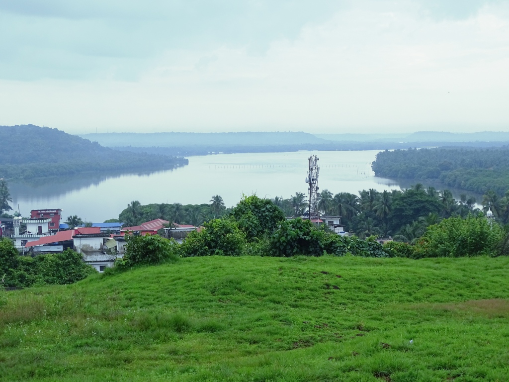

Muzhappilangad Beach

Muzhappilangad Beach is famous for being Kerala's only drive-in beach. At about 7km from Thalassery in Kannur, you have a 4 km stretch of sand that awaits you to simply drive along as you soak in the view of the beautiful Malabar Coast. Along the way, one gets to munch on delicacies from a number of shacks that offer authentic Malabar cuisine. It is often considered a swimmers paradise as the black rocks protect the beach from deep currents. This is a perfect way to relax and soak in this clean and well maintained beach. One can also partake in adventure sports like paragliding, parasailing and micro light flights along with water sports, power boating or a simple catamaran ride.
Madayipara
Madayipara is an extremely beautiful laterite plateau which narrates unique tales of vibrant hues in each season. This beautiful landscape creates wonders in colors. While the rain cloaks the place in a lush green blanket, the Summer brings with it the shades of the sun and Spring makes it a sea of blue. Spreading across an area of 700 acres, this hillock in Kannur district is a blend of beauty and history. Along with its picturesque landscapes, it also has an ancient fort called the Madayi Fort built by the Vallabha King of the Kolothu dynasty and a Jew pond, the remains of the ancient Jew settlers. Madayipara is an ecological paradise rich with wide species of flora and fauna. It has a rare collection of insect- eating plants. It is also home to hundreds of bird and butterfly species and a pond in the shape of a handheld mirror. The place has religious significance as well. The Madayi Kavu that hosts the Pooram festival and the Vadukunda Shiva Temple makes this place a favourite pilgrim destination.
St. Angelo's Fort

Built by the first Portuguese Viceroy in India, Don Francesco de Almeida (1505), St. Angelo’s Fort is among the most historic sites in Kannur. This massive triangular laterite structure is flanked by gigantic bastions that make for an imposing sight. It changed hands between the Dutch and eventually the British, who would remodel and reequip it into their primary military stronghold in Malabar. Mopilla Bay and Dharamadam Island are among the primary attractions here. Mopilla Bay is a natural harbour and the fort offers a wonderful view of it along with a sea wall projecting from the fort separating the rough sea and inland water. Dharamadam Island, barely 5 acres in area, is 100 m from the mainland and a favourite haunt of tourists. People come to the fort for relaxing strolls and just a brilliant view of the Arabian Sea.